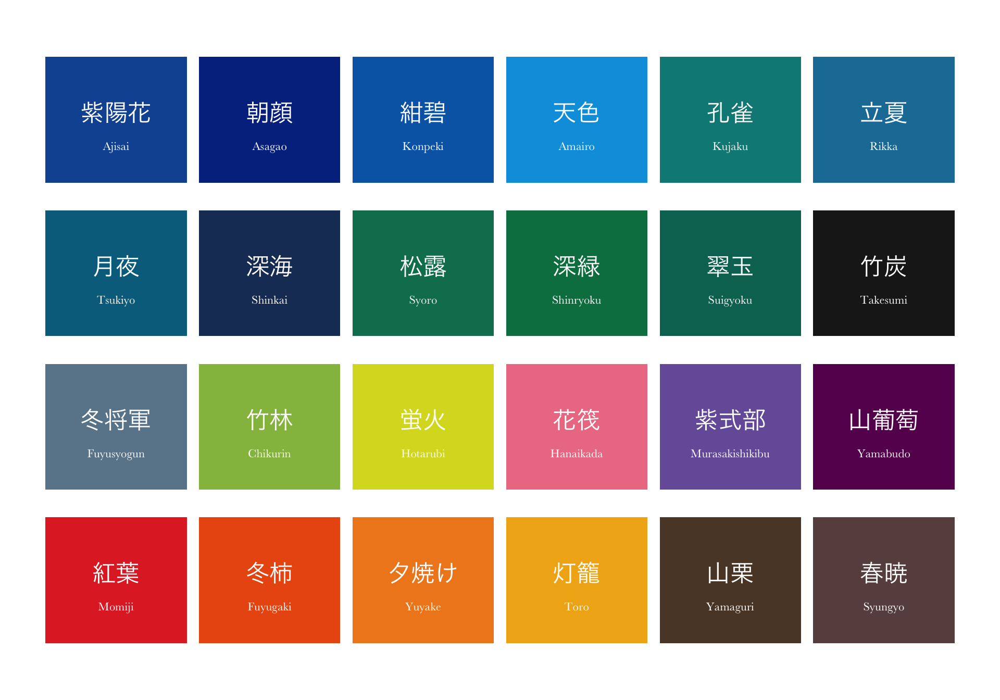
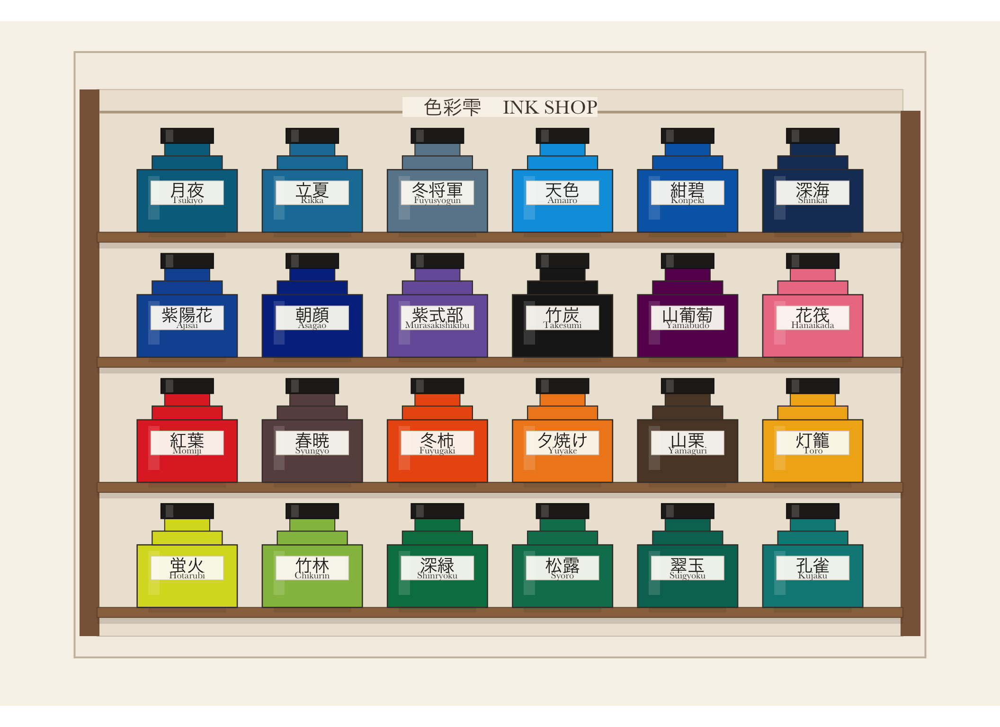

Turning Pilot’s beautifully named fountain pen inks into a tiny Japanese stationery-shop display with ggplot2.
r
ggplot
dataviz
color
japan
Author
Chi
Published
August 15, 2026
色彩雫
I just discovered that the R script I had written while back, which was a hand-curated colour palette of Pilot Iroshizuku fountain pen inks.
Pilot describes Iroshizuku as a combination of iro = colour, and shizuku = droplet. The individual inks take their names from Japanese landscapes, plants, seasons, and other bits of nature.
The names don’t simply tell you what colour an ink is.
月夜 isn’t just dark blue. It is moonlit night.
花筏 isn’t just pink. It evokes cherry blossom petals floating together on water like a little raft.
冬将軍 - literally the Winter General - somehow becomes a cool gray.
So naturally, I turned them into data!
The data
This is a small hand-curated dataset of 24 Iroshizuku inks. The hex colours are approximate representations rather than measurements of the physical inks. Fountain pen ink is much more complicated than a single hex value: paper, nib width, saturation, shading, sheen, and lighting all change how an ink appears.
The ink names and descriptions are based on Pilot’s Iroshizuku collection. The hex values are approximate colours used for this visualization rather than official measured colour values.
But hex is enough for a little plotting experiment!
First: just the colours
Before making bottles, it is useful to see the palette itself.

The Iroshizuku palette in its original order.
This already makes a nice colour chart, but the ordering feels fairly arbitrary. So I wanted to see what would happen if the inks were arranged by colour rather than by catalogue order.
Sorting colours perceptually
RGB is useful for screens, but it isn’t especially good at representing how humans perceive differences between colours. For sorting this palette, I converted the hex values into HCL colour space using the colorspace package.
HCL separates colour into:
Hue — roughly which colour family it belongs to
Chroma — how colourful or saturated it feels
Luminance — how light or dark it appears
That makes it much nicer for arranging colours in a visually coherent sequence.
Code
hcl_coords <-coords(as(hex2RGB(iroshizuku_colors$hex), "polarLUV")) |>as_tibble()ink_plot <- iroshizuku_colors |>bind_cols(hcl_coords) |>mutate(# Rotate the hue wheel so the sequence starts near blue / teal.hue_sort = (H -220) %%360 ) |>arrange(hue_sort, desc(L), desc(C)) |>mutate(plot_order =row_number() -1,col = plot_order %%6,row_raw = plot_order %/%6,row =max(row_raw) - row_raw )
The exact order is not scientifically important. I rotated the hue wheel so that the display begins around the blue-green part of the palette, simply because it produces a calmer visual flow for this particular set of inks.
The tiny ink shop
I wanted the palette to look like a tiny Japanese stationery-shop display: rows of ink bottles, wooden shelves, paper labels, and little price cards.
The whole thing is still just ggplot2.

A tiny Iroshizuku ink shop, arranged in perceptual colour order.
The palette as data
And because this is still a data project, here is the resulting palette in the same perceptual order.
日本語
Ink
Meaning
Hex
Hue °
Chroma
Lightness
月夜
Tsukiyo
Moonlit Night
#016D8C
228
44.5
42.5
立夏
Rikka
Early Summer
#1A7DA5
233
52.4
49.0
冬将軍
Fuyusyogun
Winter Commander
#6A869A
233
24.5
54.5
天色
Amairo
Sky Blue
#00A0DF
237
76.5
62.1
紺碧
Konpeki
Deep Cerulean Blue
#0368B4
250
74.5
43.1
深海
Shinkai
Deep Sea
#1C3A65
253
36.9
24.4
紫陽花
Ajisai
Hydrangea
#1255A2
254
70.0
36.4
朝顔
Asagao
Morning Glory
#04318E
261
67.8
24.2
紫式部
Murasakishikibu
Murasaki Shikibu
#765FA8
276
56.5
45.4
竹炭
Takesumi
Bamboo Charcoal
#1E1D1E
308
0.6
10.9
山葡萄
Yamabudo
Wild Grape Vine
#660D5B
317
47.2
23.2
花筏
Hanaikada
Floating Cherry Blossoms
#ED7E93
2
74.6
65.8
紅葉
Momiji
Autumn Maple Leaves
#E12E2C
12
140.0
49.7
春暁
Syungyo
Spring Dawn
#674F4D
17
15.5
36.0
冬柿
Fuyugaki
Winter Persimmon
#EA5A10
22
128.0
56.9
夕焼け
Yuyake
Sunset Glow
#EF881F
35
104.2
66.6
山栗
Yamaguri
Wild Chestnut
#5B4532
45
21.2
31.1
灯籠
Toro
Lantern Light
#F0B018
55
92.7
75.9
蛍火
Hotarubi
Firefly Glow
#D9DA26
86
89.9
84.5
竹林
Chikurin
Bamboo Forest
#94BD4E
107
68.9
71.7
深緑
Shinryoku
Forest Green
#007E4F
145
48.9
46.3
松露
Syoro
Dew on Pine Tree
#077D5E
156
41.9
46.3
翠玉
Suigyoku
Emerald
#037261
169
35.1
42.6
孔雀
Kujaku
Peacock
#028986
189
40.4
51.4
I started with an old R script containing 24 fountain pen colours.
Somewhere along the way I learned a little more about perceptual colour spaces and built a tiny imaginary Japanese ink shop out of geom_rect().
Now I just want more ink. 🖋️
Source Code
---title: "A Tiny Iroshizuku Ink Shop in R"description: "Turning Pilot's beautifully named fountain pen inks into a tiny Japanese stationery-shop display with ggplot2."author: "Chi"date: "2026-08-15"categories: - r - ggplot - dataviz - color - japanformat: html: toc: true code-fold: true code-tools: trueeditor: markdown: wrap: sentenceimage: images/iroshizuku.svg---```{r}#| label: setup#| include: falselibrary(tidyverse)library(scales)library(colorspace)```## 色彩雫I just discovered that the R script I had written while back, which was a hand-curated colour palette of Pilot Iroshizuku fountain pen inks.Pilot describes Iroshizuku as a combination of iro = colour, and shizuku = droplet.The individual inks take their names from Japanese landscapes, plants, seasons, and other bits of nature.The names don't simply tell you what colour an ink is.- 月夜 isn't just dark blue. It is moonlit night.- 花筏 isn't just pink. It evokes cherry blossom petals floating together on water like a little raft.- 冬将軍 - literally the Winter General - somehow becomes a cool gray.So naturally, I turned them into data!## The dataThis is a small hand-curated dataset of 24 Iroshizuku inks.The hex colours are approximate representations rather than measurements of the physical inks.Fountain pen ink is much more complicated than a single hex value: paper, nib width, saturation, shading, sheen, and lighting all change how an ink appears.The ink names and descriptions are based on Pilot's [Iroshizuku collection](https://www.pilotpen.eu/our-universes/fine-writing/iroshizuku-inks/).The hex values are approximate colours used for this visualization rather than official measured colour values.But hex is enough for a little plotting experiment!```{r}#| label: iroshizuku-datairoshizuku_colors <-tibble(ink_name =c("Ajisai", "Asagao", "Konpeki", "Amairo", "Kujaku", "Rikka","Tsukiyo", "Shinkai", "Syoro", "Shinryoku", "Suigyoku", "Takesumi","Fuyusyogun", "Chikurin", "Hotarubi", "Hanaikada", "Murasakishikibu","Yamabudo", "Momiji", "Fuyugaki", "Yuyake", "Toro", "Yamaguri", "Syungyo" ),ink_name_japanese =c("紫陽花", "朝顔", "紺碧", "天色", "孔雀", "立夏","月夜", "深海", "松露", "深緑", "翠玉", "竹炭","冬将軍", "竹林", "蛍火", "花筏", "紫式部","山葡萄", "紅葉", "冬柿", "夕焼け", "灯籠", "山栗", "春暁" ),hex =c("#1255A2", "#04318E", "#0368B4", "#00A0DF", "#028986", "#1A7DA5","#016D8C", "#1C3A65", "#077D5E", "#007E4F", "#037261", "#1E1D1E","#6A869A", "#94BD4E", "#D9DA26", "#ED7E93", "#765FA8", "#660D5B","#E12E2C", "#EA5A10", "#EF881F", "#F0B018", "#5B4532", "#674F4D" ),description =c("Hydrangea","Morning Glory","Deep Cerulean Blue","Sky Blue","Peacock","Early Summer","Moonlit Night","Deep Sea","Dew on Pine Tree","Forest Green","Emerald","Bamboo Charcoal","Winter Commander","Bamboo Forest","Firefly Glow","Floating Cherry Blossoms","Murasaki Shikibu","Wild Grape Vine","Autumn Maple Leaves","Winter Persimmon","Sunset Glow","Lantern Light","Wild Chestnut","Spring Dawn" ))```## First: just the coloursBefore making bottles, it is useful to see the palette itself.```{r}#| label: simple-palette#| fig-width: 10#| fig-height: 7#| fig-cap: "The Iroshizuku palette in its original order."#| echo: falsepalette_plot <- iroshizuku_colors |>mutate(idx =row_number() -1,col = idx %%6,row =3- idx %/%6 )ggplot(palette_plot) +geom_tile(aes(x = col,y = row,fill = hex ),width =0.92,height =0.82 ) +geom_text(aes(x = col,y = row +0.05,label = ink_name_japanese ),family ="Hiragino Sans",color ="white",fontface ="bold",size =6 ) +geom_text(aes(x = col,y = row -0.17,label = ink_name ),family ="Baskerville",color ="white",size =3 ) +scale_fill_identity() +coord_equal() +theme_void()```This already makes a nice colour chart, but the ordering feels fairly arbitrary.So I wanted to see what would happen if the inks were arranged by colour rather than by catalogue order.## Sorting colours perceptuallyRGB is useful for screens, but it isn't especially good at representing how humans perceive differences between colours.For sorting this palette, I converted the hex values into **HCL colour space** using the `colorspace` package.HCL separates colour into:- **Hue** — roughly which colour family it belongs to- **Chroma** — how colourful or saturated it feels- **Luminance** — how light or dark it appearsThat makes it much nicer for arranging colours in a visually coherent sequence.```{r}#| label: color-space#| echo: truehcl_coords <-coords(as(hex2RGB(iroshizuku_colors$hex), "polarLUV")) |>as_tibble()ink_plot <- iroshizuku_colors |>bind_cols(hcl_coords) |>mutate(# Rotate the hue wheel so the sequence starts near blue / teal.hue_sort = (H -220) %%360 ) |>arrange(hue_sort, desc(L), desc(C)) |>mutate(plot_order =row_number() -1,col = plot_order %%6,row_raw = plot_order %/%6,row =max(row_raw) - row_raw )```The exact order is not scientifically important.I rotated the hue wheel so that the display begins around the blue-green part of the palette, simply because it produces a calmer visual flow for this particular set of inks.## The tiny ink shopI wanted the palette to look like a tiny Japanese stationery-shop display: rows of ink bottles, wooden shelves, paper labels, and little price cards.The whole thing is still just `ggplot2`.```{r}#| label: ink-shop#| fig-width: 11#| fig-height: 8#| fig-cap: "A tiny Iroshizuku ink shop, arranged in perceptual colour order."#| echo: false#| warning: false#| message: falseshelves <- ink_plot |>distinct(row) |>mutate(shelf_y = row -0.46)ggplot() +# shop backing panelannotate("rect",xmin =-0.90,xmax =5.90,ymin =-0.82,ymax =4.02,fill ="#F3EDE3",color ="#CCBEAC",linewidth =0.7 ) +# inner display wallannotate("rect",xmin =-0.72,xmax =5.72,ymin =-0.65,ymax =3.72,fill ="#ECE4D7",color ="#D4C7B6",linewidth =0.35 ) +# wooden side postsannotate("rect",xmin =-0.86,xmax =-0.70,ymin =-0.65,ymax =3.72,fill ="#896448",color =NA ) +annotate("rect",xmin =5.70,xmax =5.86,ymin =-0.65,ymax =3.55,fill ="#896448",color =NA ) +# top railannotate("segment",x =-0.70,xend =5.70,y =3.54,yend =3.54,color ="#B8A890",linewidth =1 ) +# shelf boardsgeom_rect(data = shelves,aes(xmin =-0.72,xmax =5.72,ymin = shelf_y -0.04,ymax = shelf_y +0.04 ),fill ="#9A714C",color ="#6F5038",linewidth =0.3 ) +# shelf front edgegeom_rect(data = shelves,aes(xmin =-0.72,xmax =5.72,ymin = shelf_y -0.09,ymax = shelf_y -0.04 ),fill =alpha("#4B3525", 0.16),color =NA ) +# bottle shadowgeom_rect(data = ink_plot,aes(xmin = col -0.31,xmax = col +0.31,ymin = row -0.46,ymax = row -0.42 ),fill =alpha("black", 0.08),color =NA ) +# bottle bodygeom_rect(data = ink_plot,aes(xmin = col -0.40,xmax = col +0.40,ymin = row -0.42,ymax = row +0.08,fill = hex ),color ="#403A35",linewidth =0.45 ) +# shouldersgeom_rect(data = ink_plot,aes(xmin = col -0.28,xmax = col +0.28,ymin = row +0.08,ymax = row +0.19,fill = hex ),color ="#403A35",linewidth =0.40 ) +# neckgeom_rect(data = ink_plot,aes(xmin = col -0.18,xmax = col +0.18,ymin = row +0.19,ymax = row +0.29,fill = hex ),color ="#403A35",linewidth =0.35 ) +# capgeom_rect(data = ink_plot,aes(xmin = col -0.21,xmax = col +0.21,ymin = row +0.29,ymax = row +0.41 ),fill ="#252321",color ="#151413",linewidth =0.35 ) +# cap highlightgeom_rect(data = ink_plot,aes(xmin = col -0.17,xmax = col -0.11,ymin = row +0.30,ymax = row +0.40 ),fill =alpha("white", 0.16),color =NA ) +# glass highlightgeom_rect(data = ink_plot,aes(xmin = col -0.31,xmax = col -0.22,ymin = row -0.32,ymax = row +0.03 ),fill =alpha("white", 0.14),color =NA ) +# paper bottle labelgeom_rect(data = ink_plot,aes(xmin = col -0.29,xmax = col +0.29,ymin = row -0.20,ymax = row -0.01 ),fill =alpha("#FCFAF5", 0.94),color ="#D8D0C4",linewidth =0.25 ) +# Japanese ink namegeom_text(data = ink_plot,aes(x = col, y = row -0.08, label = ink_name_japanese),family ="Hiragino Sans",fontface ="bold",size =4.8,color ="#26231F" ) +# romaji namegeom_text(data = ink_plot,aes(x = col, y = row -0.16, label = ink_name),family ="Baskerville",size =2.7,color ="#4A443E" ) +# shop sign backgroundannotate("rect",xmin =1.72,xmax =3.28,ymin =3.50,ymax =3.66,fill ="#F8F3EA",color =NA ) +# Japanese shop nameannotate("text",x =2.12,y =3.58,label ="色彩雫",family ="Hiragino Sans",fontface ="bold",size =5.4,color ="#4F443A" ) +# English shop nameannotate("text",x =2.90,y =3.58,label ="INK SHOP",family ="Baskerville",size =5.4,color ="#4F443A" ) +scale_fill_identity() +coord_equal(xlim =c(-0.95, 5.95),ylim =c(-0.82, 3.88),clip ="off" ) +theme_void() +theme(plot.background =element_rect(fill ="#F7F2E9", color =NA),panel.background =element_rect(fill ="#F7F2E9", color =NA),plot.margin =margin(15, 20, 15, 20) )```## The palette as dataAnd because this is still a data project, here is the resulting palette in the same perceptual order.```{r}#| label: ink-table#| echo: false#| warning: false#| message: falselibrary(kableExtra)ink_table <- ink_plot |>transmute(`日本語`= ink_name_japanese,Ink = ink_name,Meaning = description,Hex =cell_spec( hex,format ="html",background = hex,color =if_else(L >65, "#222222", "#FFFFFF"),bold =TRUE ),`Hue °`=round(H),Chroma =round(C, 1),Lightness =round(L, 1) )ink_table |> knitr::kable(format ="html", # <-- IMPORTANTescape =FALSE,align =c("c", "l", "l", "r", "r", "r", "c" ) ) |> kableExtra::kable_styling(bootstrap_options =c("striped","hover","condensed","responsive" ),full_width =TRUE ) |> kableExtra::column_spec(1,bold =TRUE,width ="6em" ) |> kableExtra::column_spec(2,width ="8em" ) |> kableExtra::column_spec(3,width ="15em" ) |> kableExtra::column_spec(4,width ="5em" )```I started with an old R script containing 24 fountain pen colours.Somewhere along the way I learned a little more about perceptual colour spaces and built a tiny imaginary Japanese ink shop out of geom_rect().Now I just want more ink.🖋️